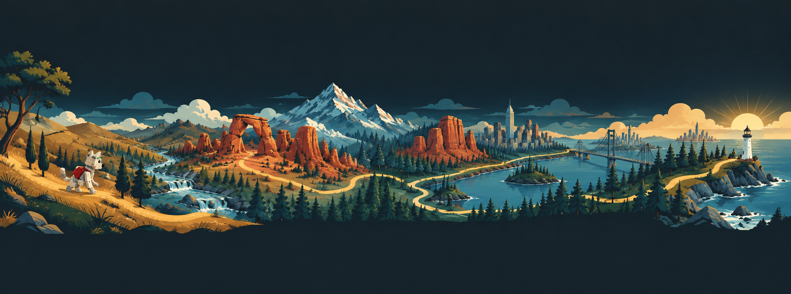

🐾
Rocket's Big Journey
An interactive brick-building adventure — 3,100 miles from coast to coast!
Chapter 1 of 10
Starting out — 0 miles
How to use this: Take turns reading each chapter out loud. Look up the real places on the map links. When you reach the Build Challenge, stop and build it with your bricks. Building with friends? Use Schedule this chapter to set up a session, and work through the group questions at the bottom together.
Wild & Rooted Co.
Rocket’s Big Journey © 2026 Wild & Rooted Co. All rights reserved.
Not affiliated with, endorsed by, or sponsored by any toy or construction-brick manufacturer.
Designed for use with generic interlocking building bricks of any brand.